We wanted to take one last vacation as a family of four and Isla has never been to Hawaii. Since Wells has been there twice before we couldn't deprive our little lady of some fun in the sun! We flew a direct flight on Alaska airlines into Lihue. We flew out at 6 p.m. and while our flights normally go well this one wasn't so great. There was an hour delay and we were by all the families so when children would cry Isla could not sleep through that. Also, there was a flight attendant who was not very friendly. It really makes a difference on these flights when there are kind and helpful people to make these experiences go a little more smoothly.
Even though that experience was not what I would call great the rest of the trip after getting off the plane at 1 a.m. went very well. We rented our car from National. It was such a treat in customer service. We are enrolled in their Emerald Club. We were able to pick any car in the lot regardless of size so we picked a small SUV since it was a comparable on gas mileage. A bonus is how easy it was for this pregnant lady to get in and out! After that we were able to easily check into our condo. We woke up to this gorgeous view which made the little sleep we got worth it!
[caption id="attachment_1154" align="aligncenter" width="800"]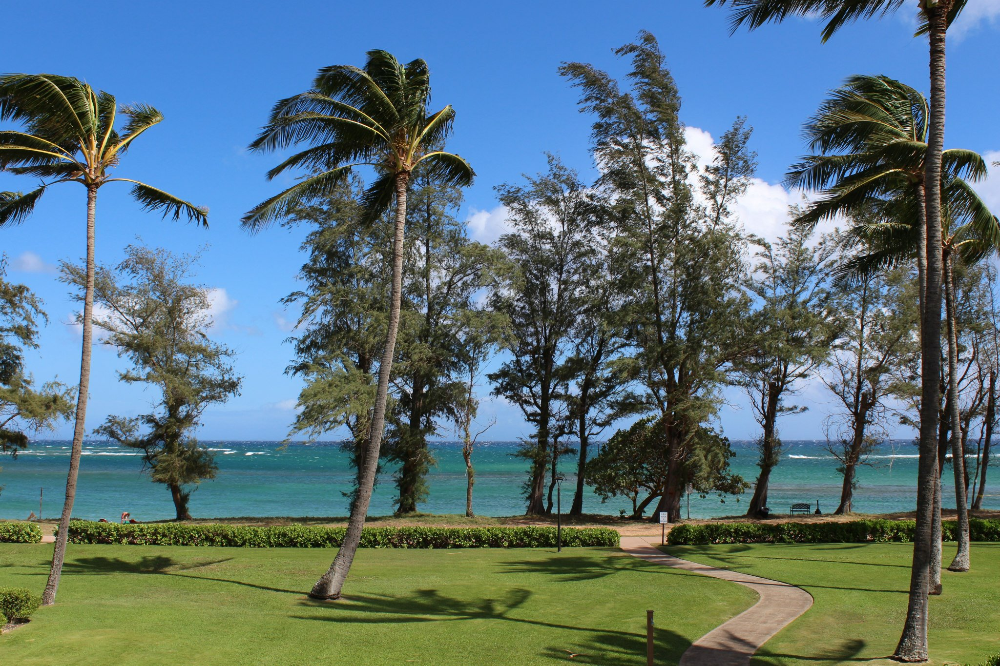 View from our condo[/caption]
{kind=link}
The first day we just chilled at the condo. We stayed at the Kono Pai Condos. Honestly, a condo is so much easier with kids and more affordable. Isla is very difficult to go out to eat with so the ability to cook all of our meals while enjoying this ocean view is as close to eating out as we want to be. We brought her Phil & Ted Lobster chair and it worked perfectly as a high chair in the condo. We stayed in Kapaa and we very close to a Safeway and Foodland so we were able to do all of our grocery shopping quickly and easily. The bedroom was in the back of the condo so while the kids napped and kept a normal routine we were still able to enjoy the ocean. The rest of the day we hung out at the beach right by here. My kids love the sand so luckily they could be easily amused for hours.
[caption id="attachment_1134" align="aligncenter" width="800"]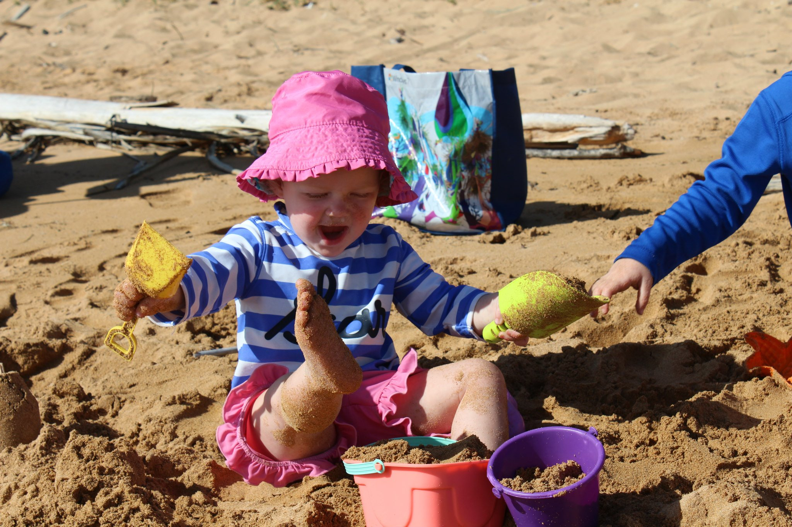 Isla loved digging in the sand![/caption]
{kind=link}
[caption id="attachment_1135" align="aligncenter" width="800"]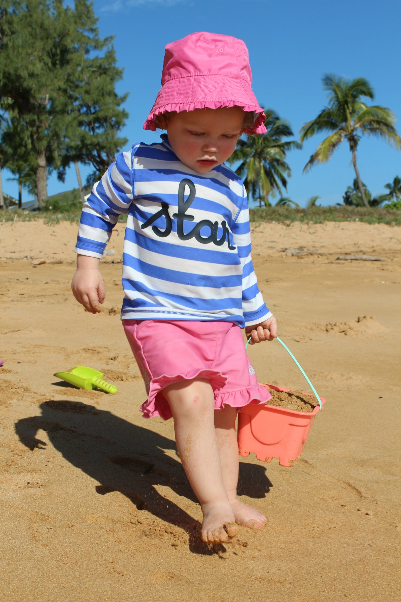 And building sandcastles[/caption]
{kind=link}
[caption id="attachment_1133" align="aligncenter" width="800"]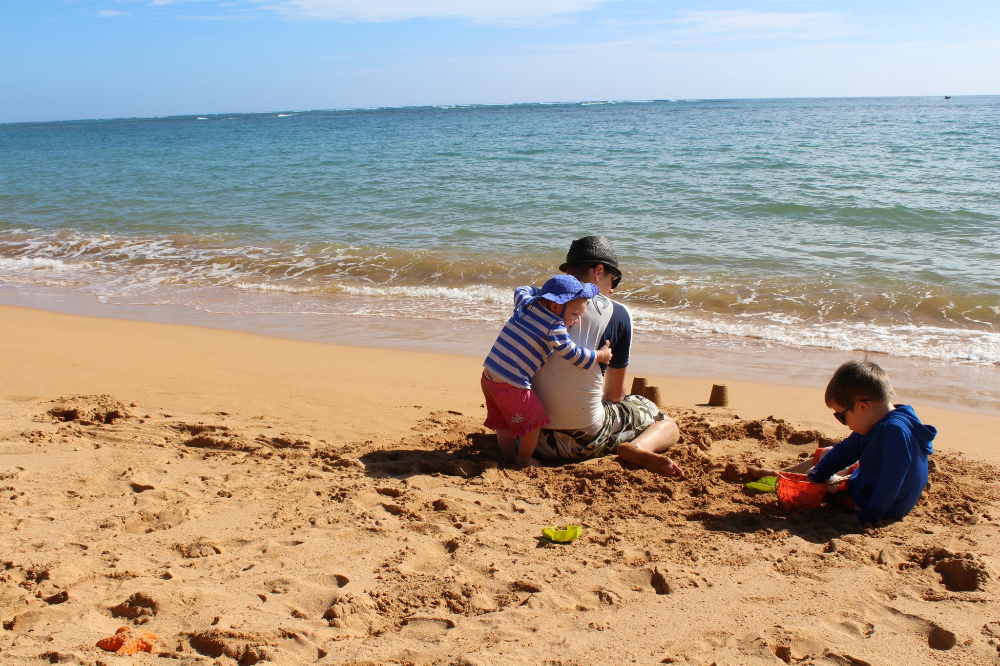 These kids are lucky to have such a fun daddy[/caption]
{kind=link}
Another great part of staying in a condo is that they have beach chairs and other beach accessories that make traveling with children so much easier. This pregnant mama was parking in a lounge chair. I got to cuddle with the wet, sandy children. One of our favorite areas was Poipu Beach. It is rated very highly. There are bathrooms, park, and lots of beach. There are waves but also less wavy cove areas for the children to splash in. This also seemed to be a popular area for seals to come up to the sand to sleep. While we were there two came up to sleep! It was crazy to see. They chain off the area around them to protect and give them peace while they sleep.
[caption id="attachment_1150" align="aligncenter" width="800"]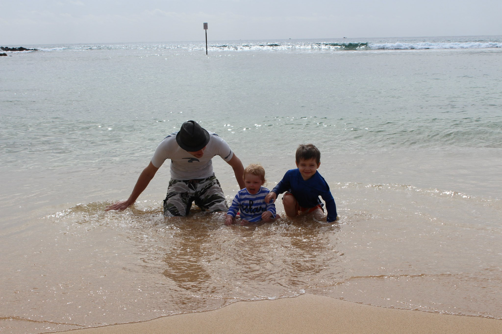 Playing in the water at Poipu Beach![/caption]
{kind=link}
[caption id="attachment_1149" align="aligncenter" width="800"]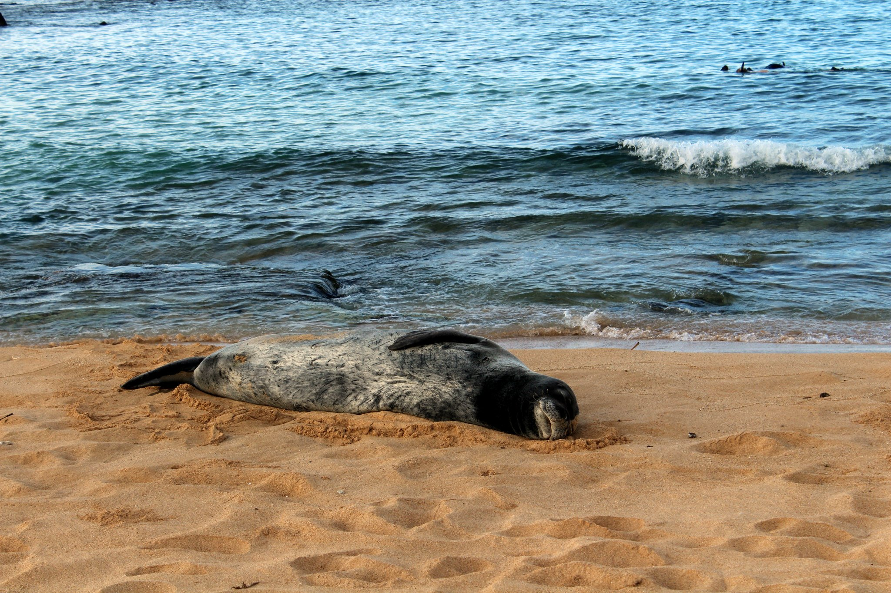 Just a seal taking a nap.[/caption]
{kind=link}
The area around Poipu is great with cute shops and beautiful homes. We spent quite a bit of time in Poipu that I will write about in another blog post as we did that during the second week of our trip. On our way to Poipu we would stop at Daylight Donuts. All of their donuts made with fruit were amazing and the old fashioned donuts. You really have to get there early otherwise the donut selection is low. Saturdays according to the girl working the counter were the best days to visit for the most selection. Yes, in this household we really love donuts! Shout out to Top Pot in the Northwest. I am still partial to their chocolate cake donuts!
As we live in Seattle we could not pass up the oppurtunity to visit Kauai Coffee Company. We learned a lot about coffee. They had samples of all their different roasts and we realized that our coffee tastes lend themselves more to a medium roast instead of the dark roast we thought we prefered. Also, they have an excellent tour and if your kids don't like tours (ahem, ours) then there are helpful signs along the trail so you can take it at your own pace.
[caption id="attachment_1163" align="aligncenter" width="800"]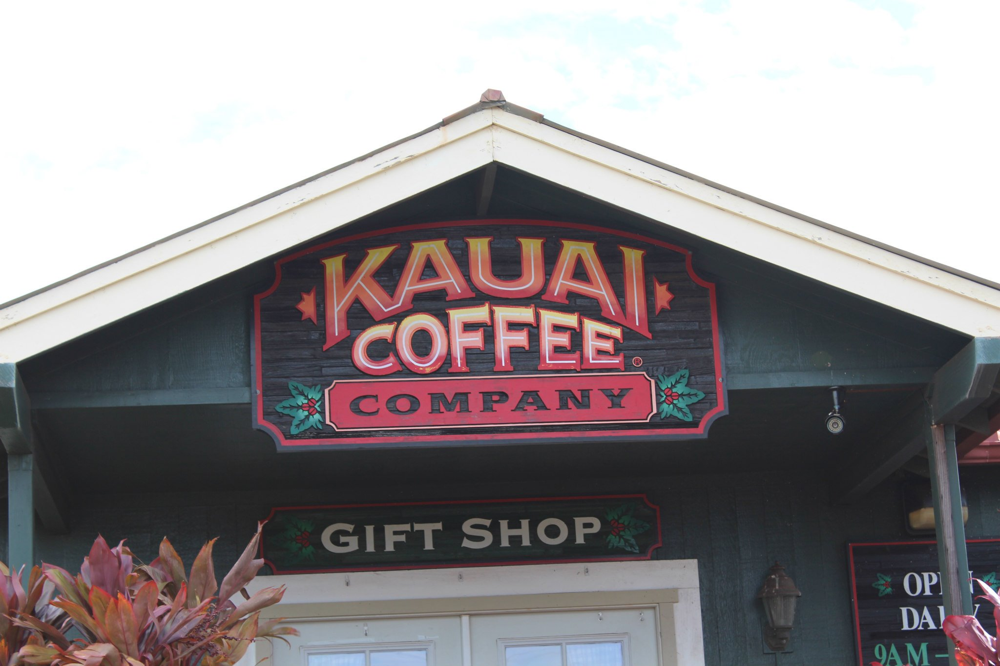 A definite visit for coffee lovers![/caption]
{kind=link}
[caption id="attachment_1160" align="aligncenter" width="800"]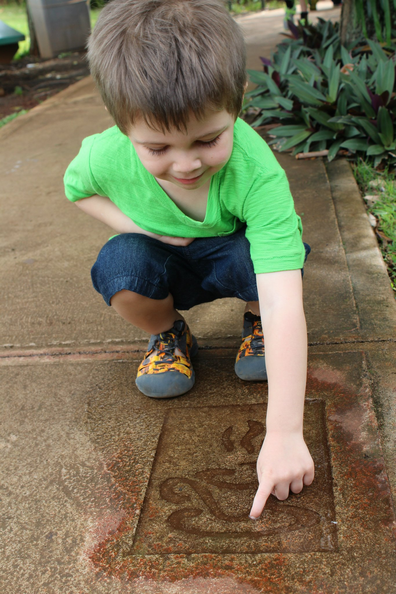 Wells loved the coffee cups stamped in the cement.[/caption]
{kind=link}
[caption id="attachment_1156" align="aligncenter" width="800"]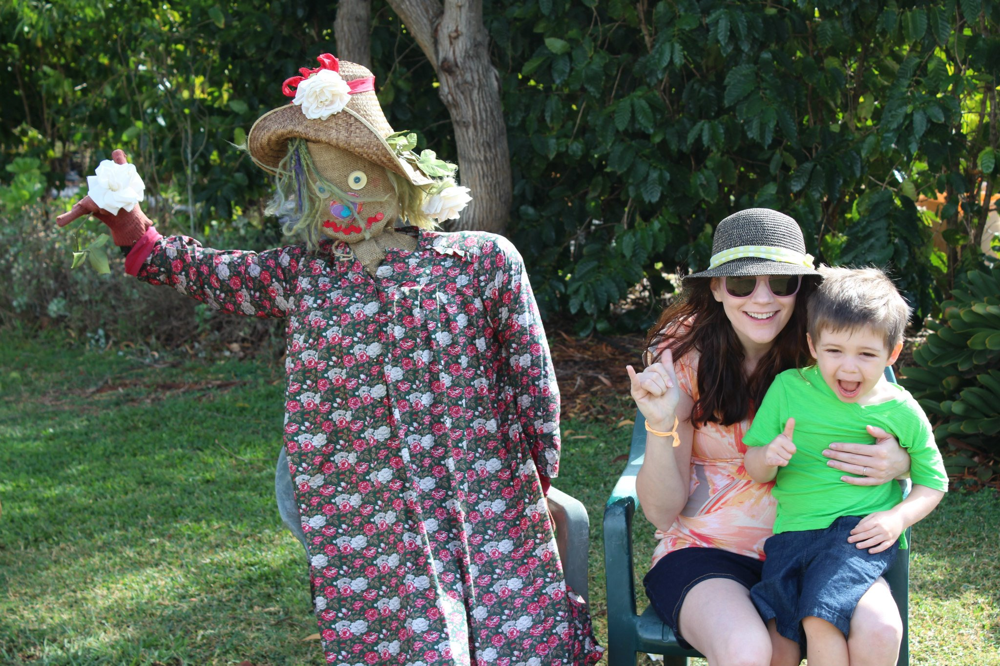 Also, the scarecrows in the fields.[/caption]
{kind=link}
After that we visited the town of Hanapepe. One of Wellington's favorite things to see on the whole trip was the Hanapepe Swinging Bridge. Isla was taking her nap when we visited there so Wells got to go on the bridge twice and loved every minute. As soon as we got to the end he wanted to do it again. As a mom I was so nervous, while I know it is safe all I could think about was if this bridge broke then how would I swim while pregnant and carry Wells. It was not very rational thinking but then I am not always very rational when pregnant!
[caption id="attachment_1159" align="aligncenter" width="800"]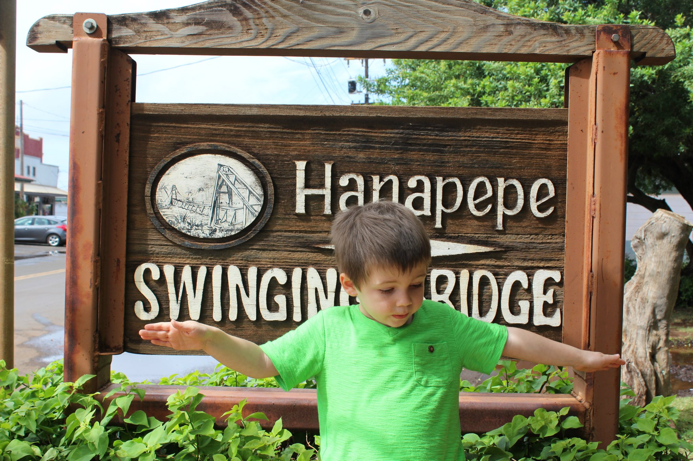 HIghly recommended by Wells.[/caption]
{kind=link}
[caption id="attachment_1158" align="aligncenter" width="800"]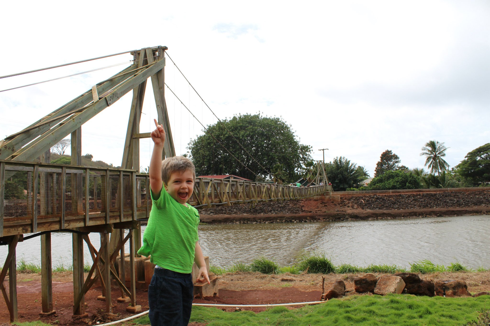 Wells pointing to the swinging bridge.[/caption]
{kind=link}
Another day we visited Wailua Falls. It is a very easy drive to do and definitely a must see in Kauai. We got there early in the morning and were able to get parking very easily. Also, there were of course roosters there that Isla was fasicnated with. She learned to mimick their call, it was quite entertaining.
[caption id="attachment_1167" align="aligncenter" width="800"]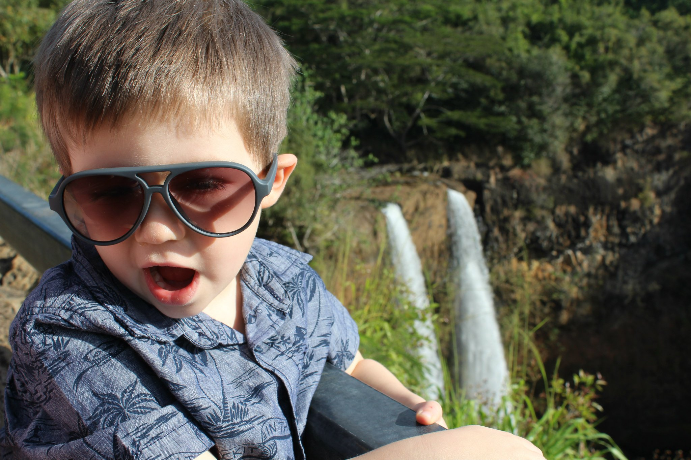 Wells enjoyed it and is rocking his sunglasses![/caption]
{kind=link}
[caption id="attachment_1168" align="aligncenter" width="800"]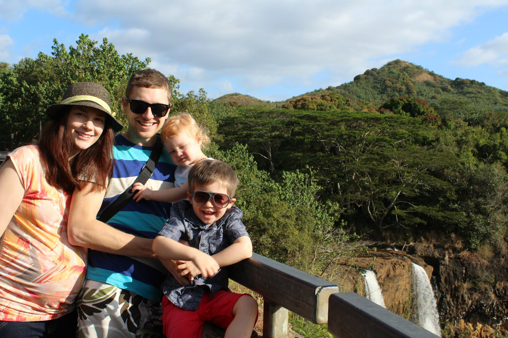 Family picture at Wailua Falls[/caption]
{kind=link}
[caption id="attachment_1169" align="aligncenter" width="800"]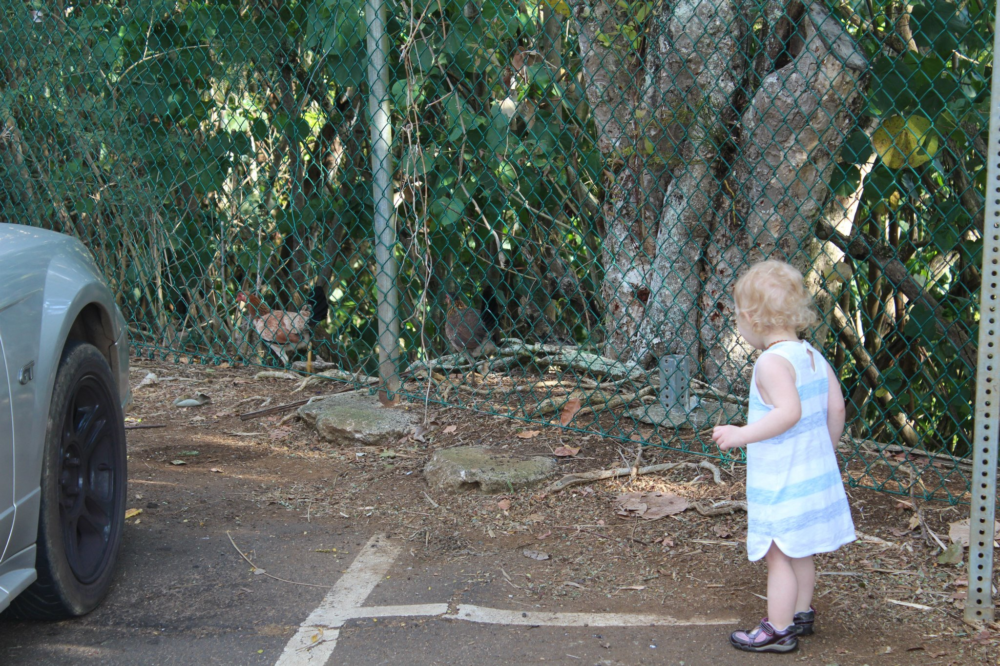 Isla greeting the roosters before visiting the falls.[/caption]
{kind=link}
In Kapaa on Wednesday at 5 p.m. and Saturday at 1 p.m. you can visit Coconut Marketplace for a free Hula show. It was a fun family activity and my husband was chosen to demonstrate the Hula Dance. It was quite entertaining, I do not think his career lies in dance but it was fun for the kids to see.
[caption id="attachment_1166" align="aligncenter" width="800"]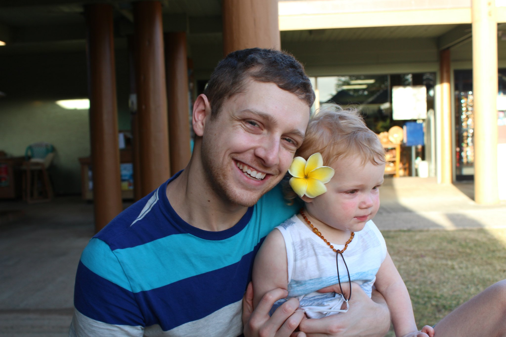 Isla liked the flower he got for participating in the Hula Dance.[/caption]
{kind=link}
Our condo was along a bike path called the Kapaa Bike Path that follows the ocean for 7 to 8 miles. There was a bike rental place right next door where you could rent bikes for a reasonable price. My husband paid $15 for a bike and trailer for the kids for 2 hours. He did the whole trail with the children and had a great time. If only this trailer was big enough for pregnant mamas!
[caption id="attachment_1142" align="aligncenter" width="800"] Isla and Wells in the trailer. They did great together and Isla took a nap.[/caption]
Isla and Wells in the trailer. They did great together and Isla took a nap.[/caption]
[caption id="attachment_1141" align="aligncenter" width="800"]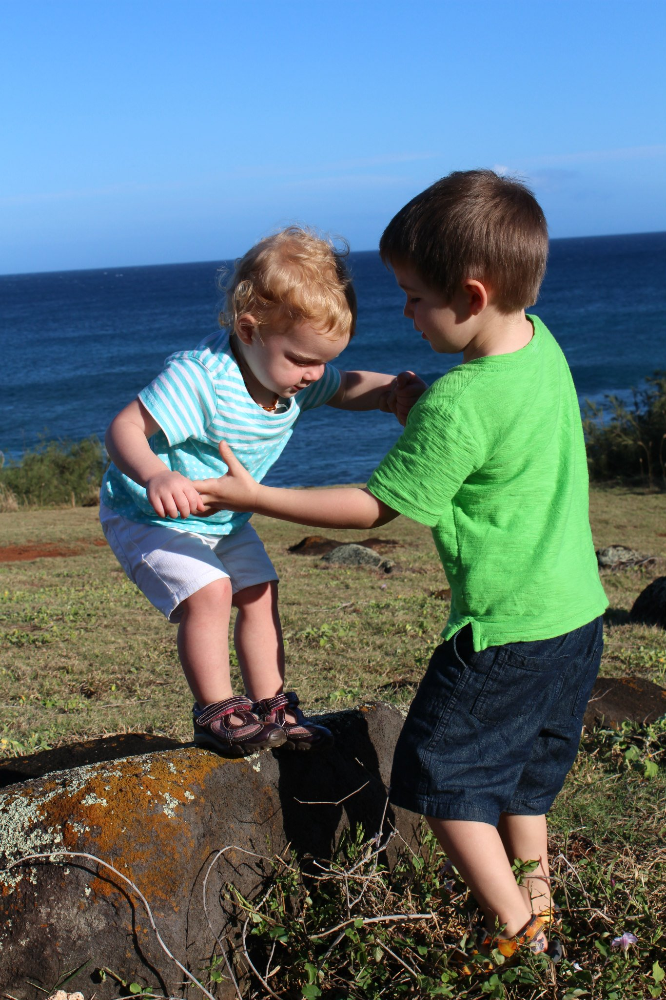 Taking a little break from riding for some exploring.[/caption]
{kind=link}
[caption id="attachment_1140" align="aligncenter" width="800"]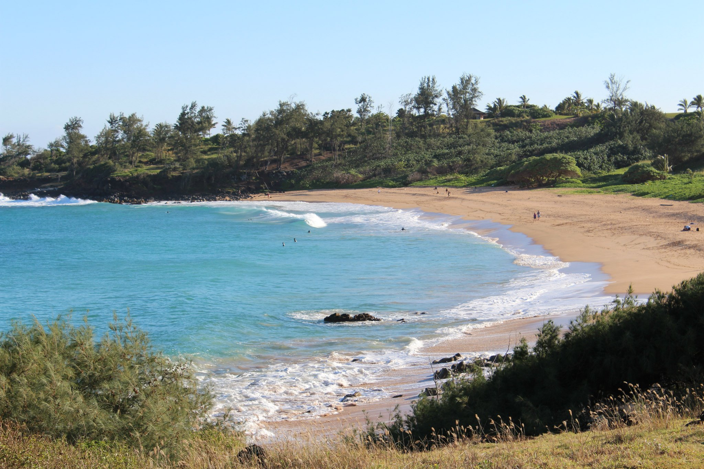 Beautiful view from the Kapaa bike path.[/caption]
{kind=link}
[caption id="attachment_1139" align="aligncenter" width="800"]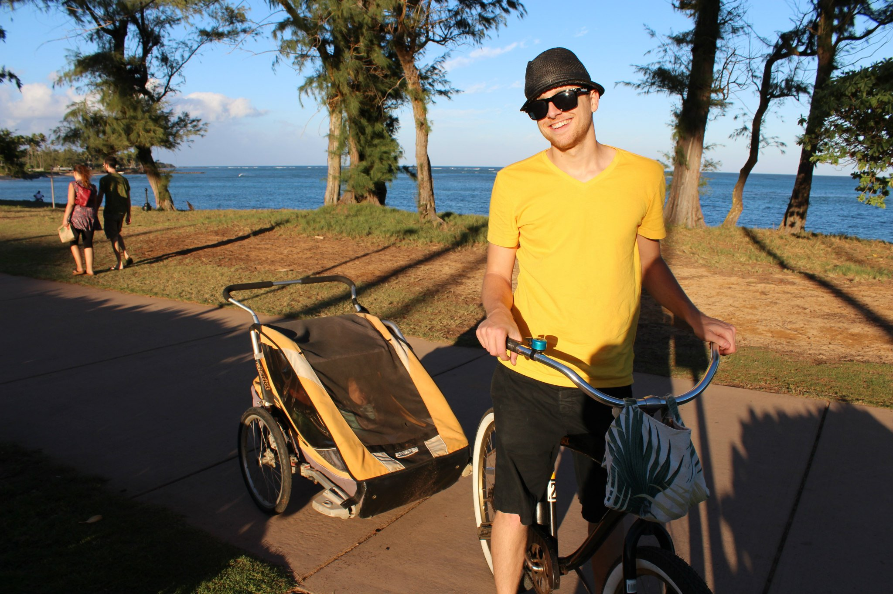 Ian with the kids in the bike trailer.[/caption]
{kind=link}
The first half of our trip was filled with lots of sunrises, too. Apparently our kids do not understand the concept of sleeping in on vacation so we saw every sunrise! I am actually quite thankful for this because our condo had a perfect view of the sunrises every morning over the ocean. Also, the roosters wake you up, too!
[caption id="attachment_1148" align="aligncenter" width="800"]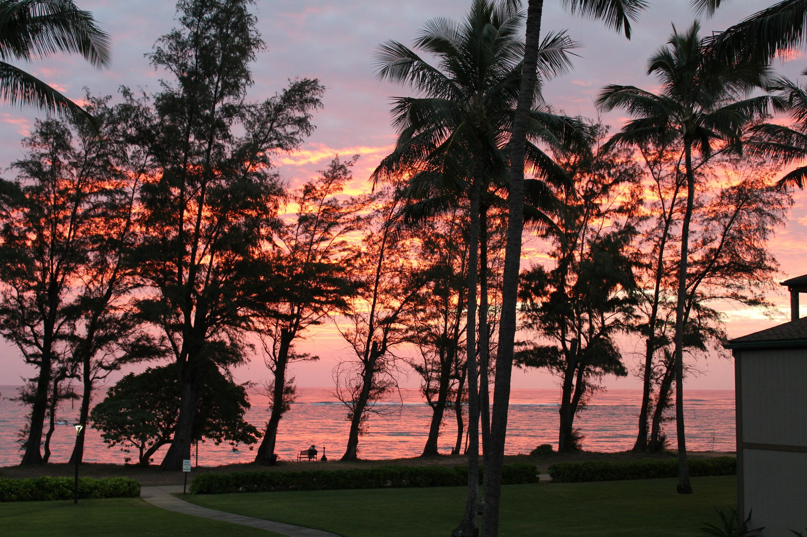 A particularly breathtaking sunrise in Kauai![/caption]
{kind=link}
[caption id="attachment_1145" align="aligncenter" width="800"]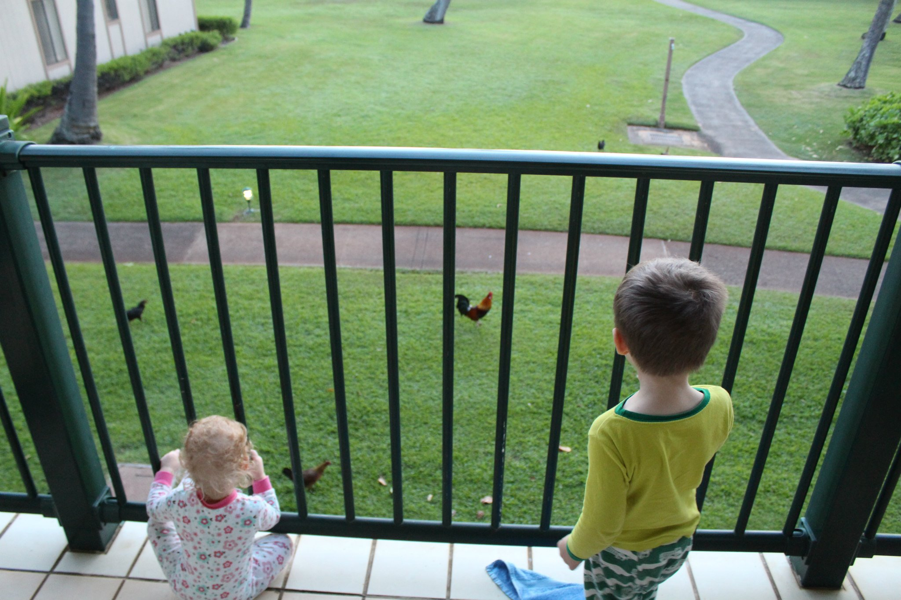 The kids enjoying the roosters while eating breakfast.[/caption]
{kind=link}
We had a great first week in Kauai. We had to move condos and say goodbye to our amazing view. The hassle of moving was worth it for this amazing condo and all the amenities found at this resort such as mini golf, croquet, tennis, basketball, and of course a pool. If you have any questions about traveling to Hawaii with children feel free to ask.
[caption id="attachment_1137" align="aligncenter" width="800"]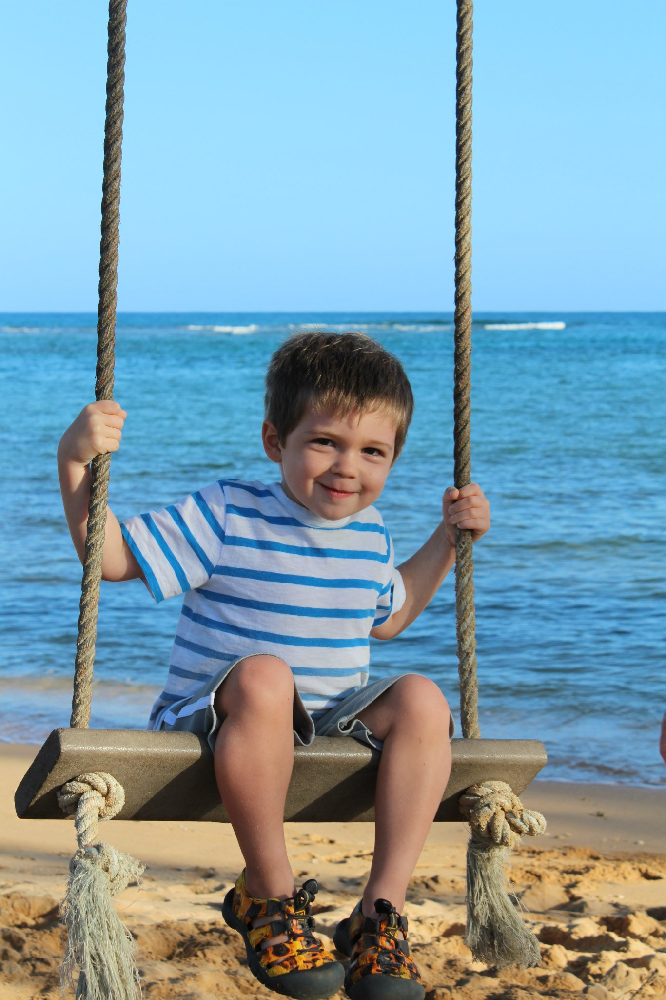 Wells swinging by the beach.[/caption]
{kind=link}
[caption id="attachment_1136" align="aligncenter" width="800"]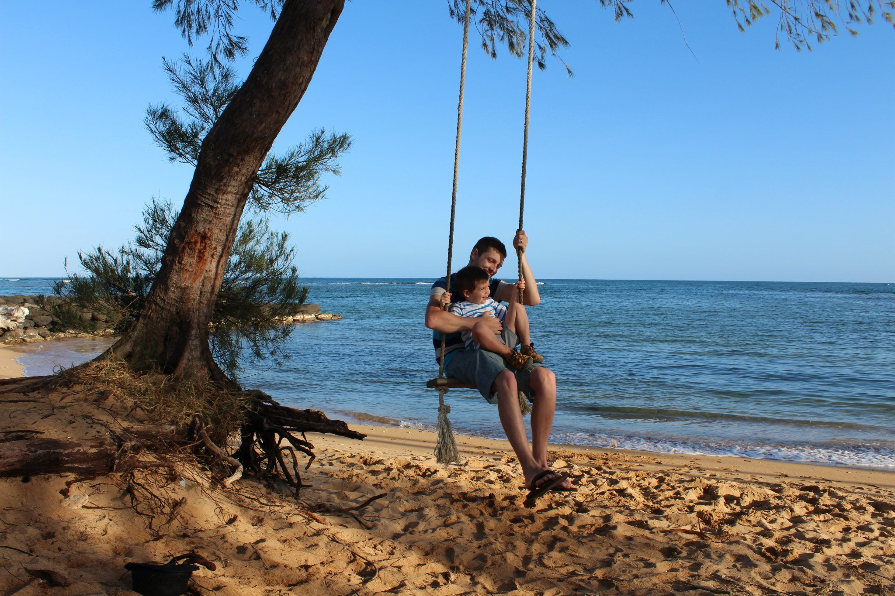 Wells and Daddy swinging.[/caption]
{kind=link}